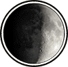

|

|
>> Содержание / Список кланов /
  AoS AoS
Известно что тьма, причиняя иным мучения страдания и смерть, столь великое удовольствие и наслаждение испытывает, коих человек благочестивый только тогда достигает, когда с женой своей законною общается. Из поведанного ясно следует, что и в сей материи тьма являет себя противным природе творением, со дна ада пренайчернейшего родом, ибо от наносимых страданий и мук только дьявол сам, пожалуй, удовольствие получать может.
Раньше ей очень хотелось увидеть закат. Нет, не заход солнца - это уже не закат, это начало ночи. Ей хотелось уловить тот миг, когда отступает день, светлое небо становиться богровым, непрозрачным, похожим на сгусток крови.
Но поймать мгновение заката оказалось так же трудно, как поймать момент наступления сна. Еще секунду назат вокруг был день, легкий и светлый, словно бы даже окрепший в предвечерние часы. И вдруг что-то неуловимо меняется. Проходит минута, другая - и ты понимаешь, что воздух темнеет, обыкновенные деревья превращаются в темные пугающие силуеты, а небо становится мутным и беспросветным. Это - закат. Наверное, он приходит, когда уже не остается сил выдерживать день. Это еще не ночь, это просто конец света. Это - закат...
Да она чтила древний договор, заключенный между Светлыми и Темными о равновесии мира оного, но всему приходит конец. Всегда получавшая неуязвимость ночью, и, частично, теряя ее днем, она, чей облик приводил в ужас, чье имя произносилось шепотом, боясь разгневать великую силу. Та что не знала поражений, ибо была неуязвима. Погибла!!! Великая сила тьмы и покровительница страхов света пала. Она великая ТЕНЬ была повержена преспешниками света, посегнувшими нарушить древний договор. То время именовалось часом великого заката...когда тьма потеряла союзника и окрепли силы света.
Но луна, чей свет помогал смертным найти дорогу ночью и предвещавшая наступление тьмы днем,
из пустоты - коей было имя хаос, исполнила последнюю волю Тени.
И молвила она:
- Могу дать тебе все, что пожелаешь. Богатство, власть и и былую славу рядом со мной. Выбирай.
- Не нужны мне ни богатства, ни слава моя прошлая, - ответила Тень. - А хочу я, чтобы были у меня последователи верные, как ночной вихрь сильные. Хочу, чтоб были у них мечи блескучие и острые как луч луны. Хочу чтоб разили они силы света и хаоса своими блескучими мечами. Вот чего я желаю.
- Дам тебе детей своих я, кои будут отныне имя носить твое, - обещала Луна. - Дам им мечи, что острее и ярче лунного луча будут. Но ты требуешь многого Тень, значит, и заплатить придеться не мало.
- Чем? Ведь у меня же ничего нет.
- Кровью твоею.
И был исполнен договор. И пришли сыновья и дочери луны. Впреть именовали их "Орден Тени"
Кто прольет кровь тени, того кровь прольется руками теней.
Официальный сайт клана: http://aos.boom.ru
|
 |
|